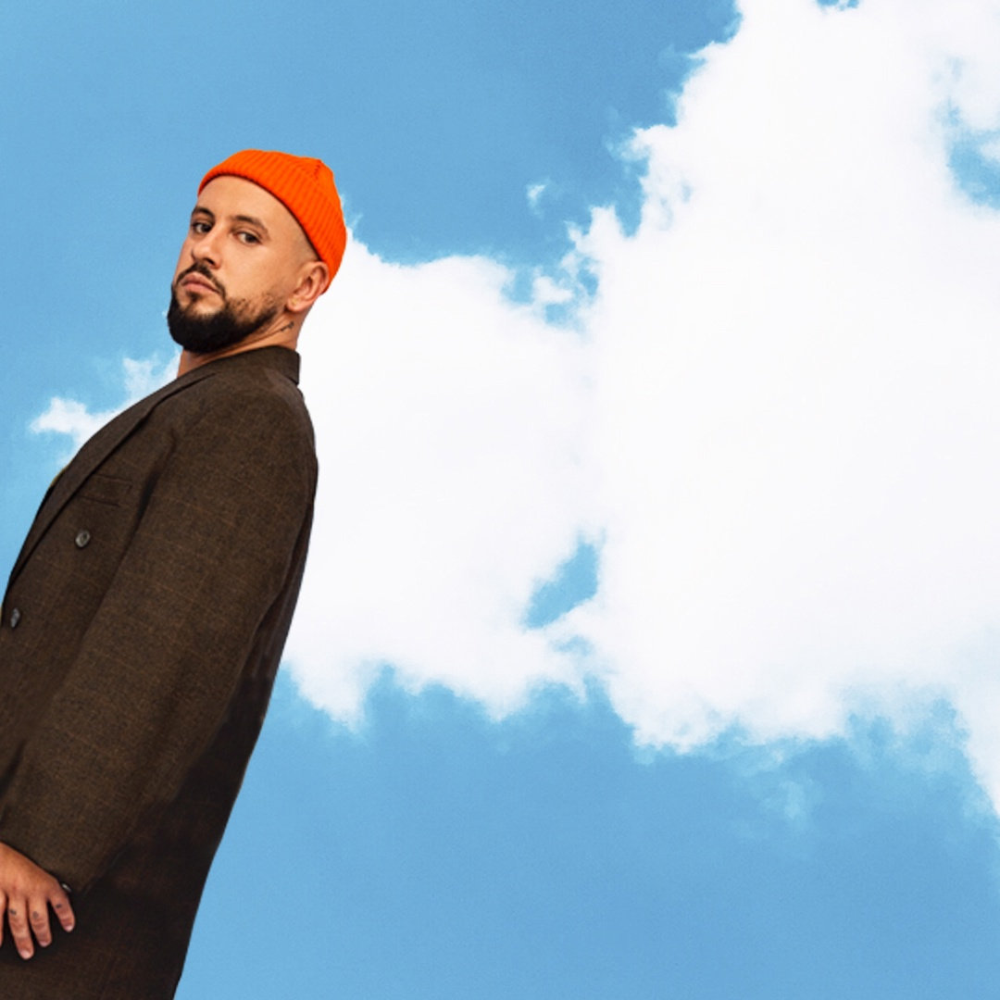
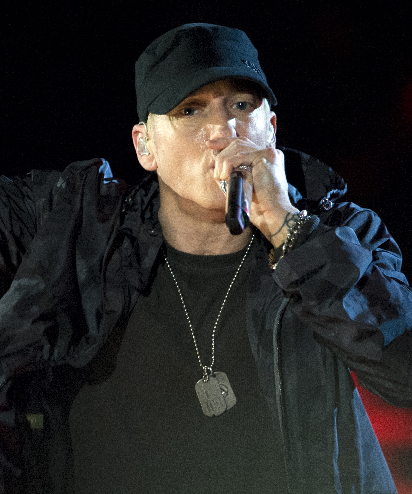

Дмитро́ Сергі́йович Мона́тик, сценічний псевдонім MONATIK (нар. 1 квітня 1986, Луцьк, УРСР) — український співак, танцюрист, автор пісень, саундпродюсер, композитор, учасник шоу «X-Фактор», «Танцюють всі!» та «Зірковий ринг», суддя танцювального шоу «Танці з зірками» та тренер вокальних шоу «Голос. Діти» та «Голос країни» на телеканалі «1+1». Заслужений артист України.
У 2008 році пройшов фінальний кастинг у «Фабриці зірок−2», але все-таки не потрапив до проєкту. Того ж року Могилевська запросила Дмитра на роботу до свого балету, під час її концертної програми «Real O». Саме ця подія і стала «доленосним моментом» для Дмитра, оскільки він погодився і переїхав до Києва.
monatik

Маршалл Брюс Метерз III (англ. Marshall Bruce Mathers III; нар. 17 жовтня 1972, Сент-Джозеф, Міссурі, США), більш відомий під сценічним псевдонімом Емінем[7][8] (англ. Eminem; стилізовано як EMINƎM) — американський репер, музичний продюсер, композитор і актор,один із засновників хіп-хопу. У 2000-х роках у Сполучених Штатах його творів було продано найбільше. Протягом своєї кар'єри він видав 11 альбомів, які посідали перше місце на Billboard 200 і п'ять синглів на Billboard Hot 100, які теж потрапляли на першу позицію. З продажами в США 45,1 мільйона альбомів і 42 мільйонів треків станом на червень 2014 року, Емінем є другим за продажами чоловічим артистом епохи Nielsen SoundScan, шостим артистом за продажами в США і найбільш продаваним хіп-хоп артистом. Rolling Stone зарахував його до списку 100 найвеличніших артистів всіх часів, називаючи його королем хіп-хопу.
eminem

Океа́н Е́льзи (або скорочено — О. Е.) — український рок-гурт, створений 12 жовтня 1994 року у Львові[1]. Лідером та вокалістом гурту є Святослав Вакарчук.
Публіка та критики неодноразово визнавали «Океан Ельзи» найкращим рок-гуртом та найкращим концертним гуртом пострадянських країн та Східної Європи[джерело?]. Усього на території України продано понад мільйон дисків ОЕ.
Океан Ельзи